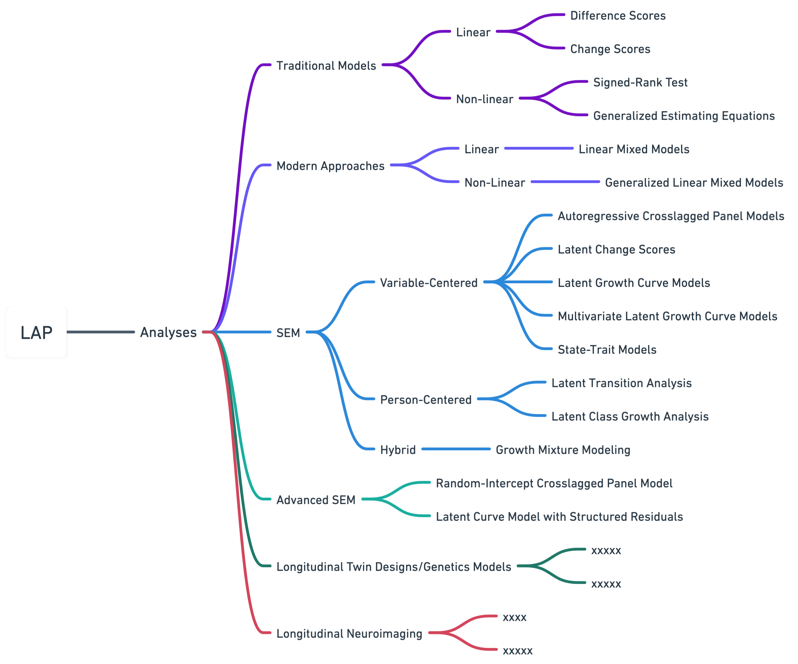

Tutorials: A Brief Overview

xxxxxx
 (remove marginal models from “examples” address (vs random-effects) in the manuscript)
(remove marginal models from “examples” address (vs random-effects) in the manuscript)
- section: “Traditional Linear Models” contents: - 1_Tutorials_DifferenceScores.qmd - 2_Tutorials_ResidualizedChangeScores.qmd - section: “Traditional Non-linear Models” contents: - 4_Tutorials_SignedRankTest.qmd - 6_Tutorials_GeneralizedEstimatingEquations.qmd (population average effects) - section: “Modern GLM Extensions(?)” - 7_Tutorials_LinearMixedModels.qmd
- 8_Tutorials_GeneralizedLinearMixedEffectsModels.qmd - section: “SEM Approaches” contents: - 8_Tutorials_AutoregressiveCrosslaggedPanelModels.qmd - 9_Tutorials_LatentChangeScoresModels.qmd - 10_Tutorials_LatentGrowthCurveModels.qmd - 11_Tutorials_MultivariateLatentGrowthCurveModels.qmd - 12_Tutorials_LatentTransitionAnalysis.qmd - 13_Tutorials_GrowthMixtureModels.qmd - 14_Tutorials_StateTraitModels.qmd - section: “Advanced SEM” contents: - 15_Tutorials_RandomInterceptCrosslaggedPanelModels.qmd - 16_Tutorials_LatentCurveModelsStructuredResiduals.qmd
GEE, on the other hand, is fitting a marginal model. These model population-averages. You’re modeling the expectation conditional only on your fixed design matrix. GLMM is fitting a mixed-effects model; Thus the the estimates are subject-specific. What differs between GEE and GLMM is the target of inference: population-average or subject-specific.
This is in contrast to mixed effect models as explained above which condition on both the fixed design matrix and the random effects. So with the marginal model above you’re saying, “forget about the difference among classrooms, I just want the population (school-wise) rate of failure and its association with gender.” You fit the model and get an odds ratio that is the population-averaged odds ratio of failure associated with gender.
Molenberghs, Verbeke 2005 has an entire chapter on marginal vs. random effects models.
xxxxxx
- Models for Longitudinal Data Since both the GLMM and WGEE are extensions of the GLM, we start with a brief overview of the latter.
2.1 Generalized Linear Models (GLM)
LMM vs LGCM? For modeling growth, researchers typically employ some type of random effects model such that a mean growth trajectory is estimated for all observations in the data but a unique growth curve is estimated for each individual in the data as well (Curran & Bauer, 2011). These types of models are generally referred to as subject-specific models (Zeger, Liang, & Albert, 1988), which are more commonly known in psychology as growth curve models. Growth models have many aliases but can be broadly grouped into two different classes of methods: the latent-curve (LC) approach, which treats the repeated measures as multivariate (also known as the “wide” data format) and tends to be fit with general structural equation modeling (SEM) software (Meredith & Tisak, 1990; Tucker, 1958; Willett & Sayer, 1994), and the mixed-effect (ME) approach, which treats the repeated measures as univariate (also known as the “long” data format) and is generally fitted with regression software (Bryk & Raudenbush, 1987; Laird & Ware, 1982; Rao 1965).Footnote1
Over the past 20 years, methodological research has shown that the LC and ME approaches are actually nuanced twists on the same idea; they have been shown to converge, and to be mathematically equivalent in many cases (e.g., Bauer, 2003; Curran, 2003; Ledermann & Kenny, 2017; Mehta & Neale, 2005).
xxxxx It is important to match a theory of change with design and statistical model to assess change. (p. 4) Models with two time points cannot provide estimates of within-person change. “Stability” over time can reflect many things, only some of which mean a lack of change. (p. 14) It is helpful to describe not only average growth (e.g. intercept and slope means), but variances in the growth parameters. (p. 25)
Models that focus exclusively on mean-level change sometimes called Marginal Models Those that emphasize individual change often do so through inclusion of Random Effects often called “growth models”
Longitudinal Psychometrics
xxxxxx
This is the middle section
Testing Sample Test!
The primary goal of the tutorial section is to help users learn and understand a specific topic or method by providing an introductory and hands-on, step-by-step guide. This section aims to create engaging, accessible, and effective entry learning experiences that enable users to develop their skills and understanding of the subject matter.

This is the temporary landing page for the Longitudinal Analysis Project.
The site is currently under construction and used for testing purposes only.
Contents may be inaccurate.